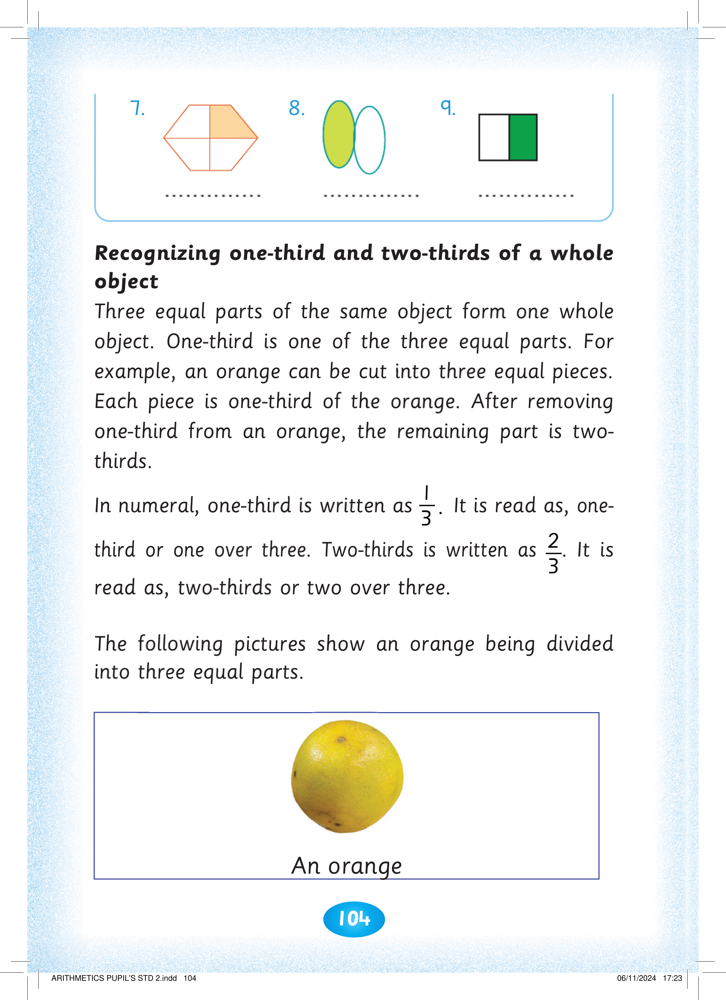
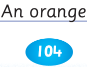
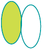

104

Exercise 4 continues. 7. A four-part polygon has its top-right section shaded. 8. Two overlapping ovals are shown, with the left oval shaded and the right oval unshaded. 9. A rectangle is divided into two equal vertical parts, with the right half shaded green.


8.


9.


Recognizing one-third and two-thirds of a whole object. Three equal parts of the same object form one whole object. One-third is one of the three equal parts. For example, an orange can be cut into three equal pieces. Each piece is one-third of the orange. After removing one-third from an orange, the remaining part is two-thirds. In numerals, one-third is written as 1 over 3. It is read as one-third or one over three. Two-thirds is written as 2 over 3. It is read as two-thirds or two over three. The following pictures show an orange being divided into three equal parts, beginning with a whole orange.
Three equal parts of the same object form one whole object. One-third is one of the three equal parts. For example, an orange can be cut into three equal pieces.
Each piece is one-third of the orange. After removing one-third from an orange, the remaining part is two-thirds.
In numeral, one-third is written as 3
1 . It is read as, one-
third or one over three. Two-thirds is written as 3
2. It is read as, two-thirds or two over three.
The following pictures show an orange being divided into three equal parts.

An orange


ARITHMETICS PUPIL'S STD 2.indd 104
06/11/2024 17:23